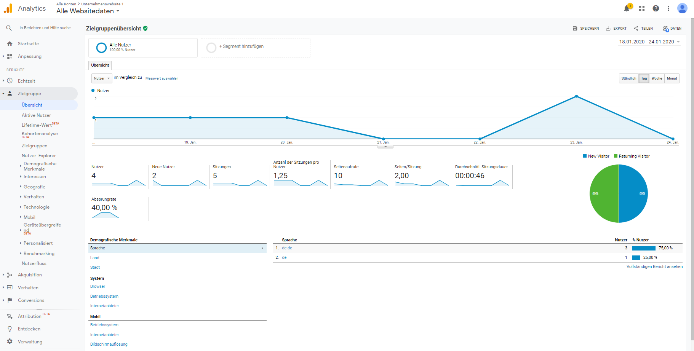

Wozu dienen digitale Analysen?
Online-Interaktionen oder auch Transaktionen, also Online-Kaufprozesse lassen sich in verschiedene Phasen kategorisieren. Diese Phasen lassen sich mithilfe von digitalen Analysetools, wie GA eines ist, messen. Die wichtigsten messbaren Phasen der Kundeninteraktion im Bezug auf Online-Kaufprozesse oder Abo-Prozesse können folgendermaßen definiert werden:
- Aquisition
Bekanntheit fördern und Interesse wecken - Verhalten
Interaktion mit dem Unternehmen - Conversion
Der Nutzer wird zu einem Kunden
In der realen Welt ist das Nachvollziehen des Kaufprozesses recht schwierig. Wohingegen online das Untersuchen dieser Phasen sehr einfach ist. Wir können mithilfe des Trackingtools , auswerten welches Verhalten zu Käufen geführt hat. Mit den Ergebnissen dieser Analyse kann entschieden werden wie neue oder Bestandskunden adressiert werden.
Google Analytics bietet jedoch nicht nur E-Commerce-Plattformen einen Mehrwert. Auch andere Unternehemnstypen können von diesem Tool profitieren:
- Publisher können damit eine treue und sehr interessierte Zielgruppe aufbauen und die Werbung auf der Website besser an die Nutzerinteressen anpassen.
- Onlineshops haben die Möglichkeit mit Hilfe digitaler Analysen, Aufschluss über das Kaufverhalten zu erhalten, um somit das Marketing entsprechend zu optimieren.
Funktionsweise von Google Analytics
Um GA nutzen zu können, musst Du dich als Nutzer mit deiner Mailadresse zu allererst registrieren. Nach erfolgreicher Registrierung, musst Du nun eine oder optional mehrere (bis zu 50) Properties einrichten. Für jede Website, für die Du Daten erfassen möchtest, richtest Du jeweils eine Property ein. Gib dafür den Website-Namen und anschließend die Website-URL an. Wähle den Protokollstandard (http:// oder https://) aus und gebe den Domainnamen ein.
Nach erfolgreicher Einrichtung einer Property, hast Du nun die Möglichkeit auf den zur Property angepassten Tracking-Code (GA-ID) zuzugreifen, um diesen auf der angegebenen Website einzubetten. Der allgemeine Tracking-Code besteht aus mehreren Zeilen Javascript-Code und einer Tracking-ID (Bsp.: UA-000000-3). Diese muss in deinem Tracking-Code enthalten sein, damit deutlich ist, an welches Konto und an welche Property die erfassten Daten gesendet werden. Der Code muss auf jeder Seite deiner Website eingefügt werden. Der benutzerdefinierte Code wird in einem Textfeld im Bereich der Verwaltung angezeigt. Kopieren den Inhalt des Textfeldes und bette ihn direkt nach dem <head>-Element ein. Ruft ein Nutzer jetzt die Seite auf, werden über den Code anonyme Daten zur Interaktion mit der Seite gesammelt. Gesammelte Daten werden zusammengefasst und an GA gesendet, damit Berichte erstellt werden können. Mittels verschiedener Kriterien werden die Daten dann zusammengeführt und strukturiert. Hier haben Du als Nutzer des Tools hast die Möglichkeit persönliche Filter zu implementieren, um scheinbar irrelevante Daten in der finalen Datenansicht zu ignorieren.
Die Google Analytics-Oberfläche
Bild in voller Größe anschauen.
- Benachrichtigungsmenü
Wenn Du oben rechts auf das Glockensymbol klickst, werden Benachrichtigungen angezeigt - Anpassung
Hier kannst Du angepasste Berichte erstellen oder auf bereits gespeicherte zugreifen. - Navigationsmenü
Wechsel hier zwischen den Übersichtsberichten. - Echzeitberichte
Werte das Live-Nutzerverhalten aus. Du erhälst Informationen zur Herkunft der Nutzer und ob beispielsweise Conversions abgeschlossen wurden. - Zielgruppenberichte
Diese Berichte enthalten Informationen zu den Nutzern, etwa das Land, in dem sie sich befinden, die Sprachen, die sie sprechen und die Technologie, mit der sie auf Ihre Website zugreifen. Zudem erhalten Sie Informationen zu Alter und Geschlecht, Interaktionen und Treue und sogar zu den Interessen der Nutzer. - Akquisitionsberichte
Mithilfe von Akqisitionsberichten kann die Leistung verschiedener Marketingkanäle verglichen und festgestellt werden, welche Quellen die besten Zugriffe und Conversions liefern. So kannst Du fundierte Entscheidungen zu fördernden Marketinginitiativen treffen. - Verhaltensberichte
Hier kannst Du einsehen, wie Nutzer mit Ihrer Website interagiert haben. Es werden die Ziel- und Ausstiegsseiten aufgeführt. Außerdem kann gezeigt werden, wonach Nutzer auf Ihrer Website gesucht haben. - Conversion-Berichte
Mit dieser Form der Berichte kannst Du auf Grundlage deiner Geschäftsziele, Zielvorhaben für deine Website erfassen.
Thema Datenschutz
Im Bezug auf den Datenschutz ist Google Analytics sehr umstritten. Durch dieses Tracking-Tool kann Google ein weitreichendes und umfassends Nutzerprofil erstellen. Richtig problemtaisch wird es dann, wenn ein Besucher einen authorisierungspflichtigen Google-Dienst verwendet. Dadurch kann das Nutzerprofil bestimmten Personen zugeordnet werden. Hinzu kommt die Speicherung der Daten in den USA. Wie bekannt sein sollte, unterscheidet sich die gesetzliche Interpretation der Datenspeicherung in den USA und Europa. Google bezieht folgendermaßen Stellung hierzu: „Wenn Sie Google-Services nutzen, zeichnen unsere Server automatisch Daten auf, die Ihr Browser verschickt, wenn Sie eine Webseite besuchen. Diese Server-Logdateien können Ihre Webanfrage, die IP-Adresse, den Browsertyp, die Browsersprache, Datum und Uhrzeit Ihrer Anfrage und ein oder mehrere Cookies enthalten, die Ihren Browser eindeutig identifizieren können.“